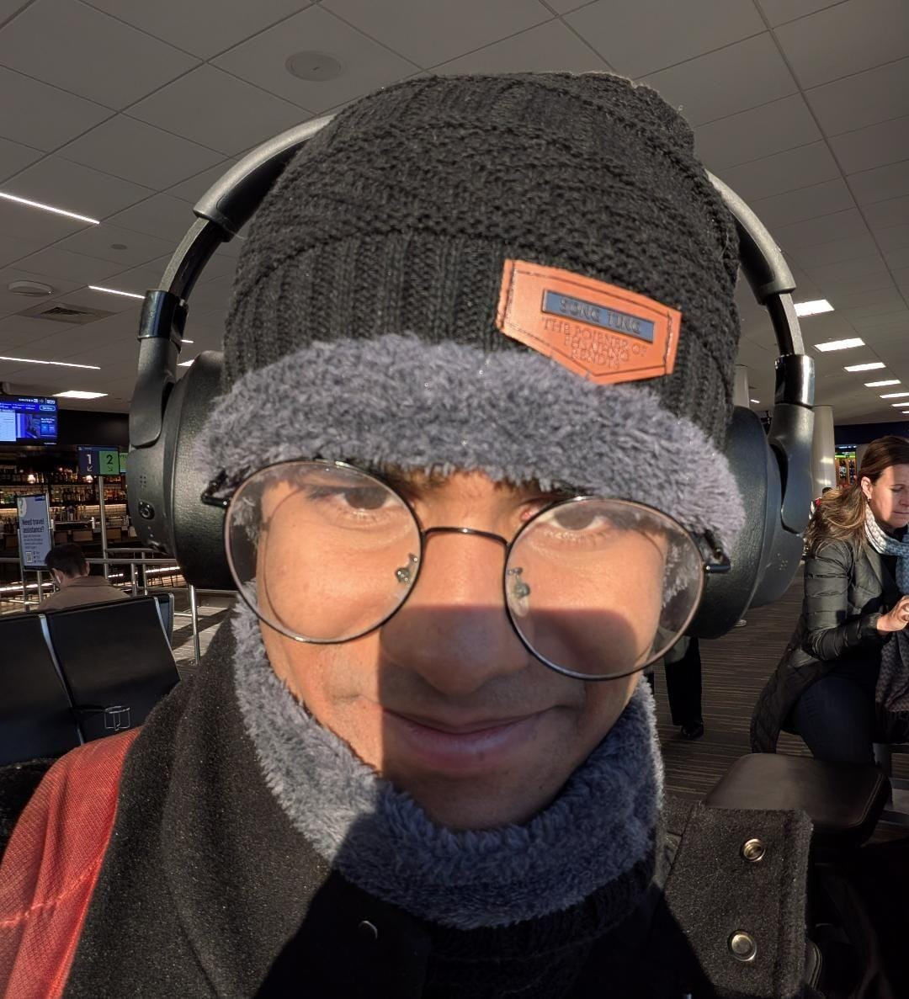
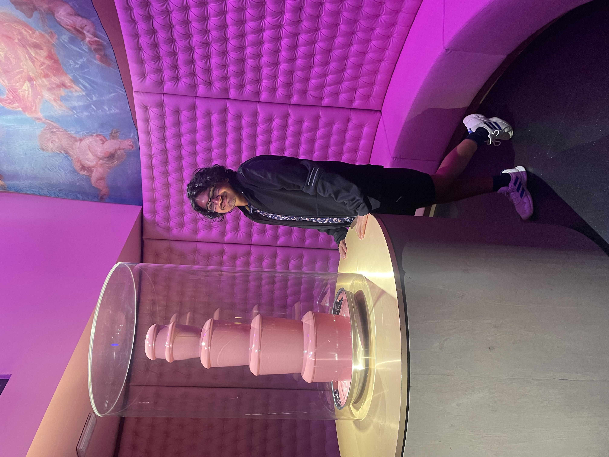
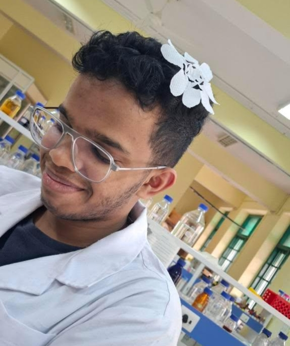
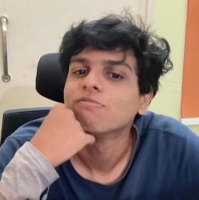
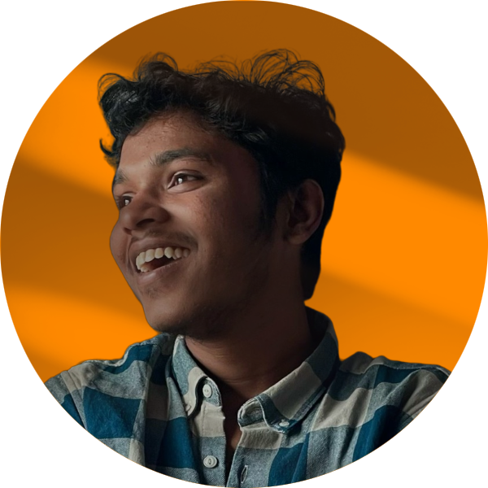
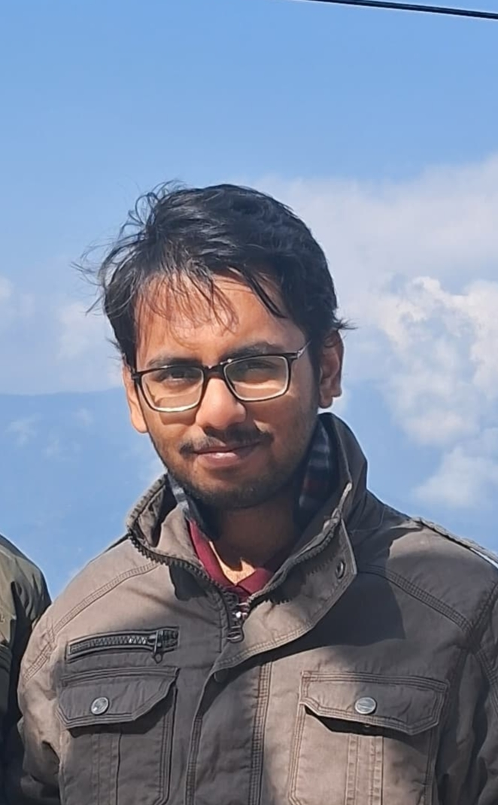
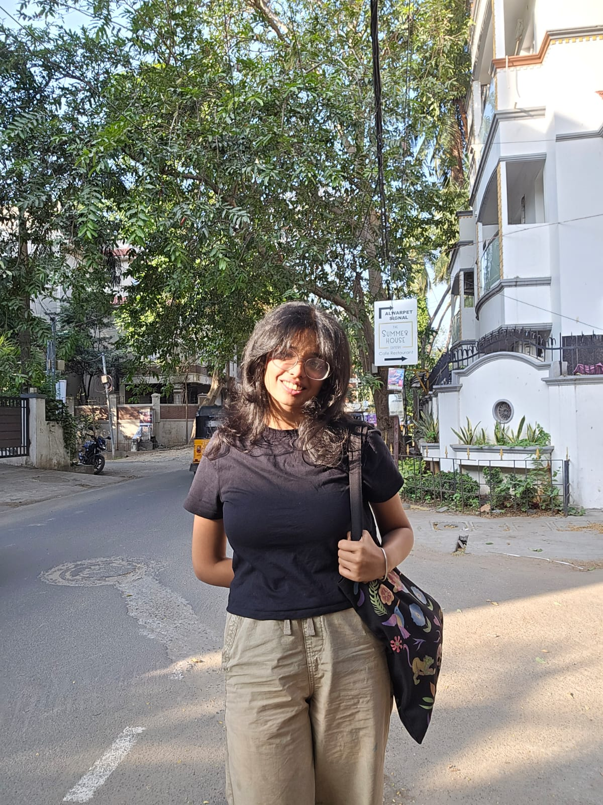
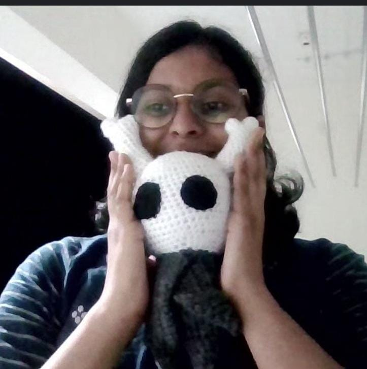

Core Team
Meet the team behind Fisher's Fishes

Vaibhav Anand
Curious about many kinds of theoretical models. Right now I study the tumor microenvironment from an ecological perspective and investigate how gene regulatory networks shape cellular behavior.
Email
Arhan Vora
Interested in Evolutionary Rescue Theory, Antibiotic Resistance, Collective Behaviour, Stochastic Dynamics and Complex Systems.
Email
Milan Vijay
Interested in Cellular Heterogeneity, Antibiotic Resistance, Noise in Biological Systems, Nanobiology, Microbial Ecology.
Email
Shithij T
Exploring genome stability and metabolic regulation with language models and neural differential equations
Email
Abhishek Singh
Interested in Applications of Statistical Mechanics and Dynamical Systems for Complex systems
Email
Riddhiman Biswas
Molecular simulations, DNA/RNA biophysics, Stochastic gene regulation, Non-equilibrium dynamics
Email
Hiranmayi Ramamurthy
Interested in Networks, collective behavior and complex systems. Currently exploring both theoretical and experimental biology
EmailDesigners
A special thanks to Meyvizhi for designing our official Fisher's Fishes logo.

Meyvizhi (2 mei/2 may)
Doodles chaotically between the lines of disease risk mapping and epidemiology. Hopefully causal inference and extreme value theory are the next victims by the end of her PhD.
Email